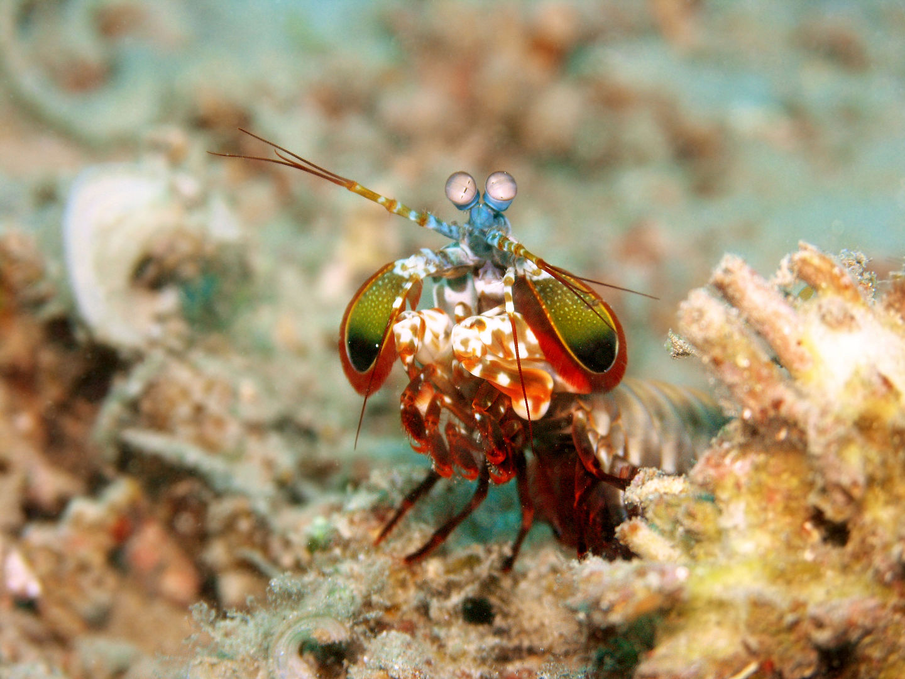
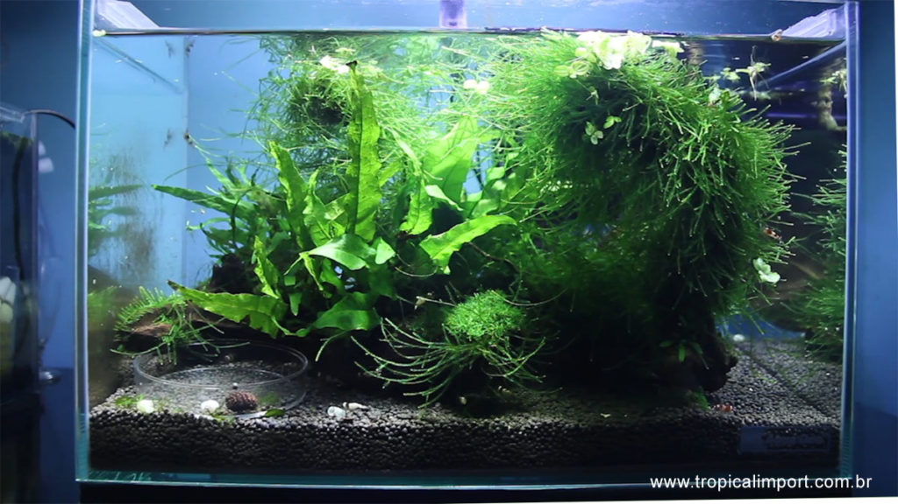
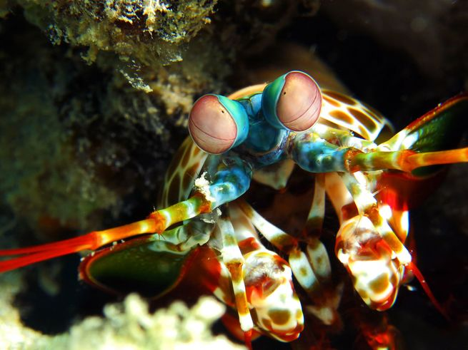

Diversos de seus nomes
Camarão mantis, camarão louva-a-Deus, camarão boxeador, camarão pistola, camarão de estalo, lacraia-do-mar e tamarutaca são alguns dos nomes comuns para o crustáceo marinho (muito parecido com um camarão, mas não é um camarão!) pertencente à ordem Stomatopoda.

Aquarismo
Medindo cerca de 18 cm e habitando águas claras e rasas dos recifes, esse animal de colorido intenso é bastante apreciado no Aquarismo.

Nocaute!
Excelente golpeador, o tamarutaca "soca" suas presas com suas garras com uma força de até 2,5 mil vezes seu peso em menos de 800 microsegundos. Este nocaute equivale a um tiro de pistola calibre 22.

Fatos sobre o Stomatopoda
O camarão mantis não é um camarão e, exceto pelo fato de ser um artrópode, também não está relacionado ao louva-deus. Em vez disso, os camarões mantis são 500 espécies diferentes pertencentes à ordem Stomatopoda. Para distingui-los do camarão verdadeiro, os camarões mantis são chamados às vezes de estomatoópodes.
Camarões Mantis são conhecidos por suas garras poderosas, que eles usam para espancar ou esfaquear suas presas. Além de seu método de caça feroz, os camarões mantis também são conhecidos por seu extraordinário senso de visão.